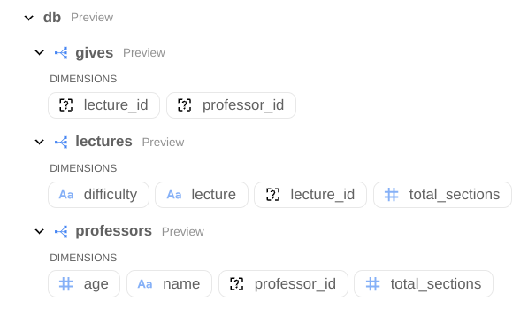

All Posts
All PostsReading data is expensive.
lloyd tabb, 2023-12-22
Joris Nix recently published a paper What if an SQL Statement Returned a Database?. The title of this paper ask a fascinating and important question. In data transformation, we often read the same data over and over producing multiple copies of the data at various granularities. If we could read the data only once and produce multiple tables in a database, the efficiency gain is obvious. It could also radically simplify data pipelines.
In their article, Joris goes on to explain how it might be implemented in SQL.
In this article, I'm going to give a couple more reasons why this question and idea is really important. I'll will show, how in Malloy, with Malloy's nesting, you can already achieve some of what Joris asks. The real benefit will only happen if underlying databases choose to do something here.
Reading data from storage
Reading data from storage the most expensive thing when querying data. The cost of computation is often incidental relative to the cost of reading data. In traditional data warehousing, the unit of reusability is a fact table. A fact table is the data at some level of dimensional granularity. Most data pipelines are built to produce fact tables.
Streaming data
When working with streaming data, you sometimes only get a single look at the data as it streams by. If you can look at the data only once and produce multiple reuslts you have a chance of being much more efficient and closer to real time in your transformation.
Malloy is mostly there already.
In Joris's paper, the SQL required to perfom the multiple results is difficult to understand. Malloy makes creating multiple results from a single query relatively easy.
Malloy queries always execute as a single SQL query so these concepts map nicely.
Let's use Joris's data.
We have a list of sections (lectures being given my mulitple professors) in CSV format.
name, age,lecture,difficulty Prof A,30,Computer Science,low Prof A,30,Databases,low Prof B,40,Computer Science,low Prof B,40,Artificial Intellegence,high Prof C,50,Data Structures,high Prof C,50,Computer Science,low
We're going to make a Malloy source: that adds some definitions. These are just common calculations associated with the sections data. A source can be queried like a table, but since these definitions are part of the source, we don't have to repeat ourselves when writing queries.

source: sections is duckdb.table('lectures.csv') extend { measure: section_count is count() dimension: lecture_id is md5!(lecture) // define a primary key for lecture professor_id is md5!(name) // define a promary key for professor }
For ANY of the the queries below:
Click on 'JSON' to see the output in JSON
Click on 'SQL' to Query in SQL generated for the Malloy Query.
run: sections -> {select: *}[ { "age": "30", "difficulty": "low", "lecture": "Computer Science", "lecture_id": "8329f5105520a1b72d062628c077ddfa", "name": "Prof A", "professor_id": "0b6a03d81e7b137f3a6bc238d3802d9a" }, { "age": "30", "difficulty": "low", "lecture": "Databases", "lecture_id": "ea2ef9b0d095bf991f4973633b485340", "name": "Prof A", "professor_id": "0b6a03d81e7b137f3a6bc238d3802d9a" }, { "age": "40", "difficulty": "low", "lecture": "Computer Science", "lecture_id": "8329f5105520a1b72d062628c077ddfa", "name": "Prof B", "professor_id": "9aa3351834cd8de84eafd711dbd3e1d9" }, { "age": "40", "difficulty": "high", "lecture": "Artificial Intellegence", "lecture_id": "7ccd622f92e98e5474d720bf66673398", "name": "Prof B", "professor_id": "9aa3351834cd8de84eafd711dbd3e1d9" }, { "age": "50", "difficulty": "high", "lecture": "Data Structures", "lecture_id": "49110ba9c7e157360ed1b72f643bc1a3", "name": "Prof C", "professor_id": "fb6561c76605336b6b166432e9f84740" } ]
SELECT base."age" as "age", base."difficulty" as "difficulty", base."lecture" as "lecture", md5(base."lecture") as "lecture_id", base."name" as "name", md5(base."name") as "professor_id" FROM lectures.csv as base
First let's write the queries for each individual table.
In Joris's document, there are three tables that are produced in results. Let's first take a look at the equivalent Malloy queries to produce these tables. Click SQL to see the equivalent SQL. You will see that the translation from the Malloy query to the equivalent SQL is relatively straight forward.
Query to produce the professors table.
The query below reads the sections table an produces a professors table.
run: sections -> { group_by: professor_id name age aggregate: section_count }
[ { "professor_id": "fb6561c76605336b6b166432e9f84740", "name": "Prof C", "age": "50", "section_count": 2 }, { "professor_id": "0b6a03d81e7b137f3a6bc238d3802d9a", "name": "Prof A", "age": "30", "section_count": 2 }, { "professor_id": "9aa3351834cd8de84eafd711dbd3e1d9", "name": "Prof B", "age": "40", "section_count": 2 } ]
SELECT md5(base."name") as "professor_id", base."name" as "name", base."age" as "age", COUNT(1) as "section_count" FROM lectures.csv as base GROUP BY 1,2,3 ORDER BY 4 desc NULLS LAST
Query to produce the lectures table.
We'd have to read the data once more to produce the lectures table.
run: sections -> { group_by: lecture_id lecture difficulty aggregate: section_count }
[ { "lecture_id": "8329f5105520a1b72d062628c077ddfa", "lecture": "Computer Science", "difficulty": "low", "section_count": 3 }, { "lecture_id": "ea2ef9b0d095bf991f4973633b485340", "lecture": "Databases", "difficulty": "low", "section_count": 1 }, { "lecture_id": "49110ba9c7e157360ed1b72f643bc1a3", "lecture": "Data Structures", "difficulty": "high", "section_count": 1 }, { "lecture_id": "7ccd622f92e98e5474d720bf66673398", "lecture": "Artificial Intellegence", "difficulty": "high", "section_count": 1 } ]
SELECT md5(base."lecture") as "lecture_id", base."lecture" as "lecture", base."difficulty" as "difficulty", COUNT(1) as "section_count" FROM lectures.csv as base GROUP BY 1,2,3 ORDER BY 4 desc NULLS LAST
Query for the gives table.
run: sections -> { group_by: lecture_id professor_id }
[ { "lecture_id": "49110ba9c7e157360ed1b72f643bc1a3", "professor_id": "fb6561c76605336b6b166432e9f84740" }, { "lecture_id": "7ccd622f92e98e5474d720bf66673398", "professor_id": "9aa3351834cd8de84eafd711dbd3e1d9" }, { "lecture_id": "8329f5105520a1b72d062628c077ddfa", "professor_id": "0b6a03d81e7b137f3a6bc238d3802d9a" }, { "lecture_id": "8329f5105520a1b72d062628c077ddfa", "professor_id": "9aa3351834cd8de84eafd711dbd3e1d9" }, { "lecture_id": "8329f5105520a1b72d062628c077ddfa", "professor_id": "fb6561c76605336b6b166432e9f84740" } ]
SELECT md5(base."lecture") as "lecture_id", md5(base."name") as "professor_id" FROM lectures.csv as base GROUP BY 1,2 ORDER BY 1 asc NULLS LAST
Returning multiple results with nesting
Malloy's nesting produces subtables on each row. In this case we have a table with a single row and the subtables professors, lectures and gives. (the #dashboard shows the data in dashboard form instead of a table).
Look at the SQL tab in the results to see the SQL generated for this query.
Look at the JSON tab to see the resulting nested tables in JSON.
# dashboard run: sections -> { nest: professors is { group_by: professor_id, name, age aggregate: total_sections is section_count } nest: lectures is { group_by: lecture_id, lecture, difficulty aggregate: total_sections is section_count } nest: gives is { group_by: lecture_id, professor_id } }
[ { "professors": [ { "professor_id": "9aa3351834cd8de84eafd711dbd3e1d9", "name": "Prof B", "age": "40", "total_sections": 2 }, { "professor_id": "0b6a03d81e7b137f3a6bc238d3802d9a", "name": "Prof A", "age": "30", "total_sections": 2 }, { "professor_id": "fb6561c76605336b6b166432e9f84740", "name": "Prof C", "age": "50", "total_sections": 2 } ], "lectures": [ { "lecture_id": "8329f5105520a1b72d062628c077ddfa", "lecture": "Computer Science", "difficulty": "low", "total_sections": 3 }, { "lecture_id": "ea2ef9b0d095bf991f4973633b485340", "lecture": "Databases", "difficulty": "low", "total_sections": 1 }, { "lecture_id": "7ccd622f92e98e5474d720bf66673398", "lecture": "Artificial Intellegence", "difficulty": "high", "total_sections": 1 }, { "lecture_id": "49110ba9c7e157360ed1b72f643bc1a3", "lecture": "Data Structures", "difficulty": "high", "total_sections": 1 } ], "gives": [ { "lecture_id": "49110ba9c7e157360ed1b72f643bc1a3", "professor_id": "fb6561c76605336b6b166432e9f84740" }, { "lecture_id": "7ccd622f92e98e5474d720bf66673398", "professor_id": "9aa3351834cd8de84eafd711dbd3e1d9" }, { "lecture_id": "8329f5105520a1b72d062628c077ddfa", "professor_id": "0b6a03d81e7b137f3a6bc238d3802d9a" }, { "lecture_id": "8329f5105520a1b72d062628c077ddfa", "professor_id": "9aa3351834cd8de84eafd711dbd3e1d9" }, { "lecture_id": "8329f5105520a1b72d062628c077ddfa", "professor_id": "fb6561c76605336b6b166432e9f84740" }, { "lecture_id": "ea2ef9b0d095bf991f4973633b485340", "professor_id": "0b6a03d81e7b137f3a6bc238d3802d9a" } ] } ]
WITH __stage0 AS ( SELECT group_set, CASE WHEN group_set=1 THEN md5(base."name") END as "professor_id__1", CASE WHEN group_set=1 THEN base."name" END as "name__1", CASE WHEN group_set=1 THEN base."age" END as "age__1", (CASE WHEN group_set=1 THEN COUNT(1) END) as "total_sections__1", CASE WHEN group_set=2 THEN md5(base."lecture") END as "lecture_id__2", CASE WHEN group_set=2 THEN base."lecture" END as "lecture__2", CASE WHEN group_set=2 THEN base."difficulty" END as "difficulty__2", (CASE WHEN group_set=2 THEN COUNT(1) END) as "total_sections__2", CASE WHEN group_set=3 THEN md5(base."lecture") END as "lecture_id__3", CASE WHEN group_set=3 THEN md5(base."name") END as "professor_id__3" FROM lectures.csv as base CROSS JOIN (SELECT UNNEST(GENERATE_SERIES(0,3,1)) as group_set ) as group_set GROUP BY 1,2,3,4,6,7,8,10,11 ) SELECT COALESCE(LIST({ "professor_id": "professor_id__1", "name": "name__1", "age": "age__1", "total_sections": "total_sections__1"} ORDER BY "total_sections__1" DESC NULLS LAST) FILTER (WHERE group_set=1),[]) as "professors", COALESCE(LIST({ "lecture_id": "lecture_id__2", "lecture": "lecture__2", "difficulty": "difficulty__2", "total_sections": "total_sections__2"} ORDER BY "total_sections__2" DESC NULLS LAST) FILTER (WHERE group_set=2),[]) as "lectures", COALESCE(LIST({ "lecture_id": "lecture_id__3", "professor_id": "professor_id__3"} ORDER BY "lecture_id__3" ASC NULLS LAST) FILTER (WHERE group_set=3),[]) as "gives" FROM __stage0
Querying the resulting JSON.
We've taken the json output from the query above and placed it into a JSON file. We could have just as also placed it in a parquet file or in BigQuery as it supports nested structures.
Below we define a Malloy source 'db' based on this data.
source: db is duckdb.table('db.json')
We can see from the schema above that the we have three nested tables in the above source.
We can query the individual tables, for example professors.
run: db -> { select: professors.professor_id, professors.name, professors.age }
[ { "professor_id": "0b6a03d81e7b137f3a6bc238d3802d9a", "name": "Prof A", "age": "30" }, { "professor_id": "9aa3351834cd8de84eafd711dbd3e1d9", "name": "Prof B", "age": "40" }, { "professor_id": "fb6561c76605336b6b166432e9f84740", "name": "Prof C", "age": "50" } ]
SELECT professors_0."professor_id" as "professor_id", professors_0."name" as "name", professors_0."age" as "age" FROM db.json as base LEFT JOIN LATERAL UNNEST(base."professors") WITH ORDINALITY as professors_0_outer(professors_0, __row_id) ON true ORDER BY 1 asc NULLS LAST,professors_0_outer.__row_id ASC NULLS LAST
When working with nested data, accessing results from mulitple nested sources the results in a cross join, so we'll write some where clauses.
run: db -> { where: gives.professor_id = professors.professor_id and gives.lecture_id = lectures.lecture_id select: professors.name lectures.lecture lectures.difficulty }
[ { "name": "Prof A", "lecture": "Computer Science", "difficulty": "low" }, { "name": "Prof A", "lecture": "Databases", "difficulty": "low" }, { "name": "Prof B", "lecture": "Artificial Intellegence", "difficulty": "high" }, { "name": "Prof B", "lecture": "Computer Science", "difficulty": "low" }, { "name": "Prof C", "lecture": "Data Structures", "difficulty": "high" } ]
SELECT professors_0."name" as "name", lectures_0."lecture" as "lecture", lectures_0."difficulty" as "difficulty" FROM db.json as base LEFT JOIN LATERAL UNNEST(base."gives") WITH ORDINALITY as gives_0_outer(gives_0, __row_id) ON true LEFT JOIN LATERAL UNNEST(base."professors") WITH ORDINALITY as professors_0_outer(professors_0, __row_id) ON true LEFT JOIN LATERAL UNNEST(base."lectures") WITH ORDINALITY as lectures_0_outer(lectures_0, __row_id) ON true WHERE (gives_0."professor_id"=professors_0."professor_id") and (gives_0."lecture_id"=lectures_0."lecture_id") ORDER BY 1 asc NULLS LAST,gives_0_outer.__row_id ASC NULLS LAST,professors_0_outer.__row_id ASC NULLS LAST,lectures_0_outer.__row_id ASC NULLS LAST
Conclusion: SQL syntax?
If there were SQL syntax to create multiple tables, we can envision creating a syntax like nest to create an additional output table as part of a single SQL query. The effiency here is obvious in that the data would only be read from storage once.
Appendix: The nesting query and results
Below is SQL query generated by Malloy to produce the nested data.
WITH __stage0 AS ( SELECT group_set, CASE WHEN group_set=1 THEN md5(sections."name") END as "professor_id__1", CASE WHEN group_set=1 THEN sections."name" END as "name__1", CASE WHEN group_set=1 THEN sections."age" END as "age__1", (CASE WHEN group_set=1 THEN COUNT( 1) END) as "total_sections__1", CASE WHEN group_set=2 THEN md5(sections."lecture") END as "lecture_id__2", CASE WHEN group_set=2 THEN sections."lecture" END as "lecture__2", CASE WHEN group_set=2 THEN sections."difficulty" END as "difficulty__2", (CASE WHEN group_set=2 THEN COUNT( 1) END) as "total_sections__2", CASE WHEN group_set=3 THEN md5(sections."lecture") END as "lecture_id__3", CASE WHEN group_set=3 THEN md5(sections."name") END as "professor_id__3" FROM lectures.csv as sections CROSS JOIN (SELECT UNNEST(GENERATE_SERIES(0,3,1)) as group_set ) as group_set GROUP BY 1,2,3,4,6,7,8,10,11 ) SELECT COALESCE(LIST({ "professor_id": "professor_id__1", "name": "name__1", "age": "age__1", "total_sections": "total_sections__1"} ORDER BY "total_sections__1" desc NULLS LAST) FILTER (WHERE group_set=1),[]) as "professors", COALESCE(LIST({ "lecture_id": "lecture_id__2", "lecture": "lecture__2", "difficulty": "difficulty__2", "total_sections": "total_sections__2"} ORDER BY "total_sections__2" desc NULLS LAST) FILTER (WHERE group_set=2),[]) as "lectures", COALESCE(LIST({ "lecture_id": "lecture_id__3", "professor_id": "professor_id__3"} ORDER BY "lecture_id__3" asc NULLS LAST) FILTER (WHERE group_set=3),[]) as "gives" FROM __stage0
And the data produced, in JSON
[ { "professors": [ { "professor_id": "0b6a03d81e7b137f3a6bc238d3802d9a", "name": "Prof A", "age": 30, "total_sections": 2 }, { "professor_id": "9aa3351834cd8de84eafd711dbd3e1d9", "name": "Prof B", "age": 40, "total_sections": 2 }, { "professor_id": "fb6561c76605336b6b166432e9f84740", "name": "Prof C", "age": 50, "total_sections": 2 } ], "lectures": [ { "lecture_id": "8329f5105520a1b72d062628c077ddfa", "lecture": "Computer Science", "difficulty": "low", "total_sections": 3 }, { "lecture_id": "ea2ef9b0d095bf991f4973633b485340", "lecture": "Databases", "difficulty": "low", "total_sections": 1 }, { "lecture_id": "7ccd622f92e98e5474d720bf66673398", "lecture": "Artificial Intellegence", "difficulty": "high", "total_sections": 1 }, { "lecture_id": "49110ba9c7e157360ed1b72f643bc1a3", "lecture": "Data Structures", "difficulty": "high", "total_sections": 1 } ], "gives": [ { "lecture_id": "49110ba9c7e157360ed1b72f643bc1a3", "professor_id": "fb6561c76605336b6b166432e9f84740" }, { "lecture_id": "7ccd622f92e98e5474d720bf66673398", "professor_id": "9aa3351834cd8de84eafd711dbd3e1d9" }, { "lecture_id": "8329f5105520a1b72d062628c077ddfa", "professor_id": "0b6a03d81e7b137f3a6bc238d3802d9a" }, { "lecture_id": "8329f5105520a1b72d062628c077ddfa", "professor_id": "9aa3351834cd8de84eafd711dbd3e1d9" }, { "lecture_id": "8329f5105520a1b72d062628c077ddfa", "professor_id": "fb6561c76605336b6b166432e9f84740" }, { "lecture_id": "ea2ef9b0d095bf991f4973633b485340", "professor_id": "0b6a03d81e7b137f3a6bc238d3802d9a" } ] } ]